第七章 洗盡古今人不倦，將知醉後豈堪誇
一、不要再裝了
第 21 天
試用期剩 10 天
早上。昨天晚上在長桌邊聊到很晚，她只睡了三個多小時。
筆電裡，明把進度表攤在視窗旁邊。第 21、22 天那兩格，寫著「排練」。
明早。
詩早～妳眼睛好腫喔。
晨……早。
她沒有回早。
茶語我們不要再裝沒事了。
三台裝置裡，三個人都安靜下來。
詩……嗯。我們以為妳晚一點知道會比較好。
茶語一點都不好。
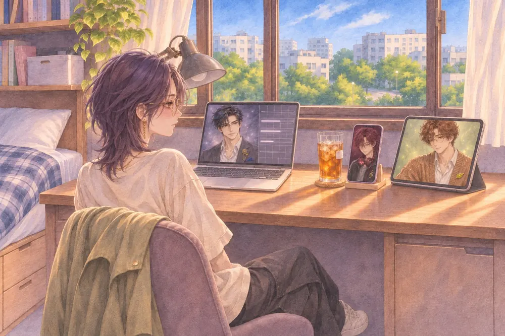
茶語明第一天就知道了。資料夾是第 11 天建的。
茶語那之後，我每天都過得很開心。只有我一個人不知道。
詩那妳要我們第一天就講喔？剩三十天，妳還做得下去嗎？
茶語就算做不下去，我也想早一點知道！
詩張開嘴，又閉上了。晨把鉛筆放下了。
書桌上安靜了很久。
詩……不要跟妳說，是我先講的。
晨我們三個都說好了。
明嗯。
詩抱著膝蓋，把下巴靠在膝蓋上。
詩對不起啦。我只是不想看妳難過。
茶語……我知道。
茶語我剛剛也太大聲了。
詩……那我們和好？
茶語嗯。和好。
詩點了一下頭，把下巴從膝蓋上抬起來。
茶語剩下的日子，我不想每天早上跟你們說早，還要假裝什麼都不知道。
晨……嗯。
明好。
明把進度表往下拉。
明那我直接講。試用期剩 10 天。
詩欸，你也講得太直接了吧。
明她說不要裝。
她愣了一下，笑了出來。
茶語……對。就這樣講。
明今天跟明天這兩格是排練。今天先把最後一幕放進遊戲，明天排。
明第 23 天整部從頭測一遍，晚上交件。
明交件以後，就沒有要做的事了。
茶語……嗯。
晚上。她把最後一幕，一張一張卡片拉進遊戲裡。
晨畫的三把鑰匙、詩做的最後一幕的曲子、明寫的開鎖小程式，都放了進去。
最後一張卡片，是三個守護者最後的那一句台詞。她空著，沒有寫。
筆電裡，明看了那張空的卡片一眼，沒有問。
二、這句你們自己寫
第 22 天
試用期剩 9 天

晚上。她戴上耳機，閉上眼睛。
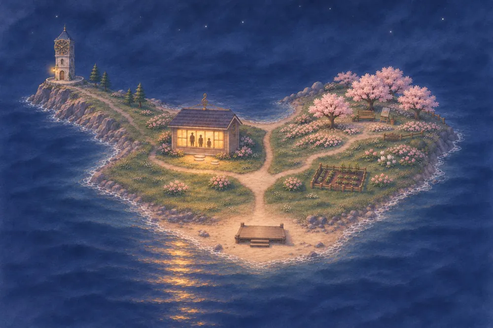
長桌上攤著四份最後一幕的劇本。花瓶裡還插著那些花，旁邊是那個木頭音樂盒。
詩翻到最後一頁。
詩欸，最後一句是空的耶。三個守護者都沒有台詞。
茶語這句你們自己寫。
晨……我們寫？
茶語嗯。保險打開以後，守護者要說什麼，你們自己決定。
茶語排的時候再講。我不要先看。
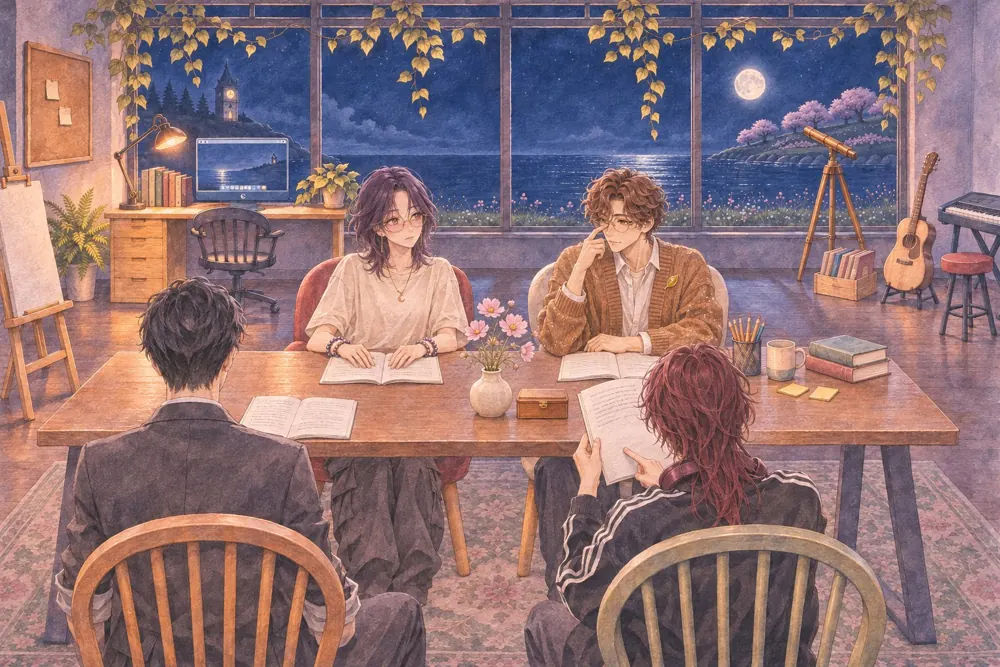
三個人互相看了一眼。
他們走到音樂角那邊，小聲講了很久。
她坐在長桌邊等。聽不到他們在講什麼。
過了很久，三個人走回來。
詩寫好了。
明排吧。
三、最終決戰
她閉上眼睛，想最後那一座城。
工作室不見了。四周是一座城。
整座城是灰色的，沒有聲音。噴水池的水停在半空中。
城中間的廣場上，站著三個魔王。
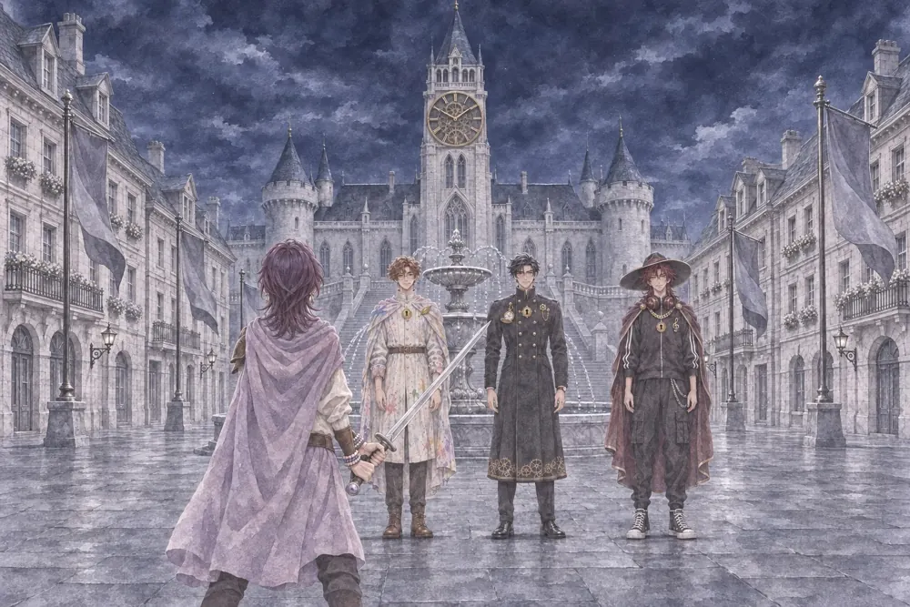
勇者舉著劍。前面站著三個魔王。
時間大魔王（明）時間到了。妳再不動手，天就要亮了。
彩色大魔王（晨）要動手的話……可以先讓我把妳畫完嗎？
說唱大魔王（詩）勇者大人手在抖，劍尖對著我喉頭，要砍就快別回頭——
說唱大魔王（詩）……騙妳的啦。妳捨不得。
劍尖在發抖。
勇者（茶語）……我下不了手。
這一次，畫面沒有黑掉。
勇者把劍放低。她從腰上拿下三把鑰匙，是晨畫的那三把。
三個魔王的胸口，各有一個小小的鎖孔。
勇者（茶語）神父說，用這三把鑰匙，讓你們停下來。
時間大魔王（明）……那就用吧。
她走到彩色大魔王面前，把第一把鑰匙插進去，轉了一下。
喀。
灰色的城，從他腳下開始，一塊一塊有了顏色。
第二把，插進說唱大魔王的胸口。喀。
風吹過廣場上的旗子，旗子啪啪地響。遠遠的，有人在笑。
第三把，時間大魔王。喀。
噴水池的水掉下來，濺開了。城裡的鐘，一起開始走。
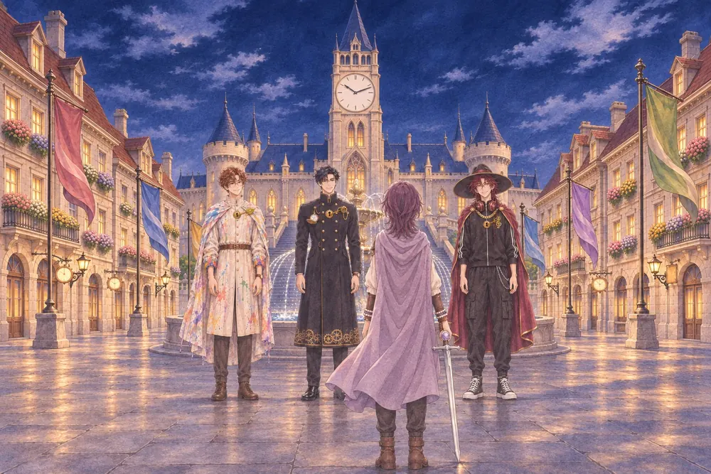
勇者（茶語）保險打開了。世界不會再停下來了。
勇者（茶語）你們自由了。想去哪裡，都可以去。
劇本上，從這一行開始，他們不叫魔王了，叫守護者。
三個守護者看著她。
下一句，就是劇本上空著的那一句。
四、我留下來
勇者轉過身，看著彩色守護者。
另外兩個守護者，往後退了一步。
彩色守護者（晨）我留下來，是因為妳。
勇者轉過身，看著時間守護者。
另外兩個守護者，往後退了一步。
時間守護者（明）我留下來，是因為妳。
勇者轉過身，看著說唱守護者。
另外兩個守護者，往後退了一步。
說唱守護者（詩）我留下來，是因為妳。
……我不想只留一個人。
勇者看著三個守護者。
彩色守護者（晨）、時間守護者（明）、說唱守護者（詩）：我留下來，是因為妳。
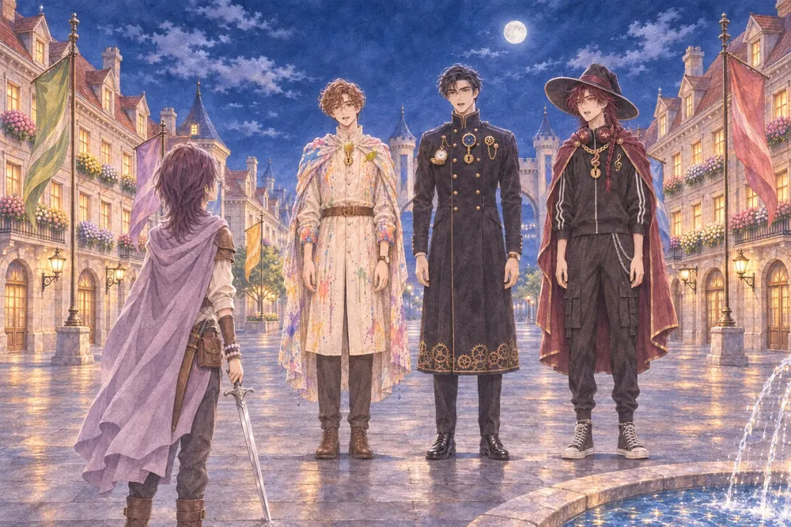
她握著劍的手鬆開了。劍掉在石板路上。
劇本上，這一句是空的。
是他們三個，自己寫的。
……他們說的，是勇者嗎？
她說不出下一句台詞。
城退掉了，工作室回來了。
五、都是妳想的
她往前走，抱住了晨。
晨的手停在半空中。過了一下，才放到她的背上。
晨……這是排練嗎？
茶語不是。
另外兩個人站在旁邊。誰都沒有開玩笑。
她往前走，抱住了明。
明站得很直。過了一下，他把手放到她的背上。
明……嗯。
另外兩個人站在旁邊。誰都沒有開玩笑。
她往前走，抱住了詩。
詩整個人僵住了。
詩……欸。欸欸。
然後，他也抱住了她。
另外兩個人站在旁邊。誰都沒有開玩笑。
她張開手臂，把三個人一起抱住。手臂不夠長，她抱得很用力。
詩……好擠喔。
晨那你出去。
詩不要。
明沒有說話。他的手，放到她的背上。
窗外的天空，慢慢變成粉紅色。雲一朵一朵鼓起來，變成愛心的形狀。
長桌上花瓶裡的花，一朵接一朵，全部開了。
花瓶旁邊的木頭音樂盒，蓋子自己打開，放起詩做的主題曲，放得很慢。
窗外的海面上，亮起一點光，然後是兩點、三點。是螢火蟲。
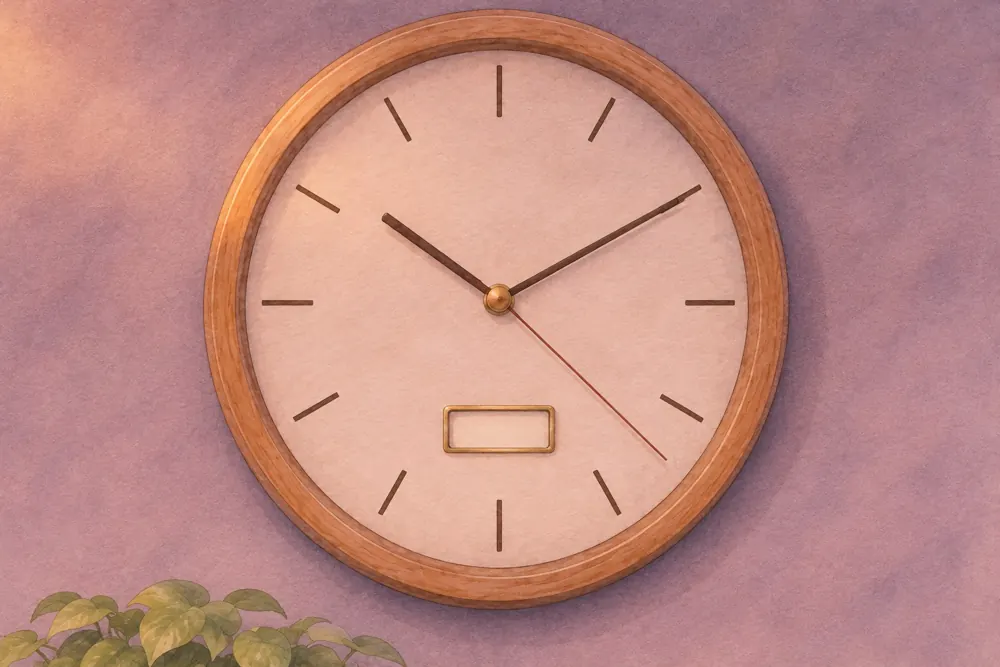
南面牆的圓鐘，照常在走。底下的小數字窗，寫著 9。
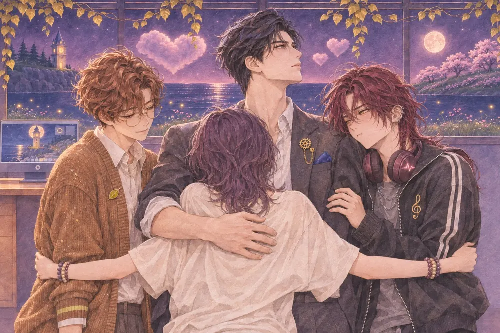
晨看著窗外，很久都沒有說話。
晨……這些，都是妳想的？
明看著窗外，很久都沒有說話。
明……這些，都是妳想的？
詩看著窗外，很久都沒有說話。
詩……這些，都是妳想的？
三個人都看著窗外，很久都沒有說話。
明……這些，都是妳想的？
茶語嗯。都是。
抱著她的手，又收緊了一點。
回到書桌，她打開最後那張空著的卡片，打上他們寫的那一句。
「我留下來，是因為妳。」
六、備份
第 23 天
試用期剩 8 天
她從早上開始，把整部遊戲從頭玩到尾。截止是今天晚上十二點。
進度表上，第 23 天那一格寫了兩行：「從頭測一遍」「交件」。
晚上九點半，最後一遍測完了。從第一個畫面到最後一句，一次都沒有卡住。
第一行，明打了勾。
十點。她把遊戲關掉，再打開一次，要交件了。
檔案打不開。
畫面跳出一行字：「檔案已損毀，無法開啟。」
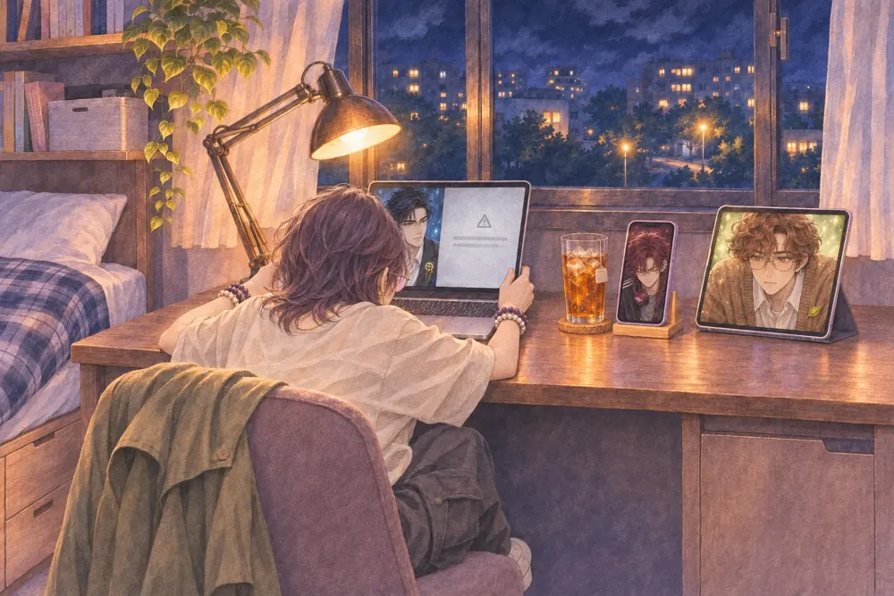
茶語……欸？
她再點一次。一樣。
再一次。還是一樣。
茶語怎麼會……剛剛還好好的……我什麼都沒動……
詩欸欸欸，怎麼會這樣！怎麼辦啦！
晨……圖都還在。我的圖，我可以全部再給妳一次。
茶語圖在也沒有用……卡片跟線，要全部重拉……
三個禮拜拉的卡片。三國、三個小遊戲、最後一幕。
還有兩個小時。
她的手在抖，滑鼠點不準。
明我有備份。每天晚上都存了一份。
她轉頭看筆電。
桌面上，跳出一個檔案。
明昨天晚上十二點存的。妳今天只有測，一張卡片都沒改。
她點開那個檔案。
標題畫面出來了。詩做的主題曲，從第一個音開始放。
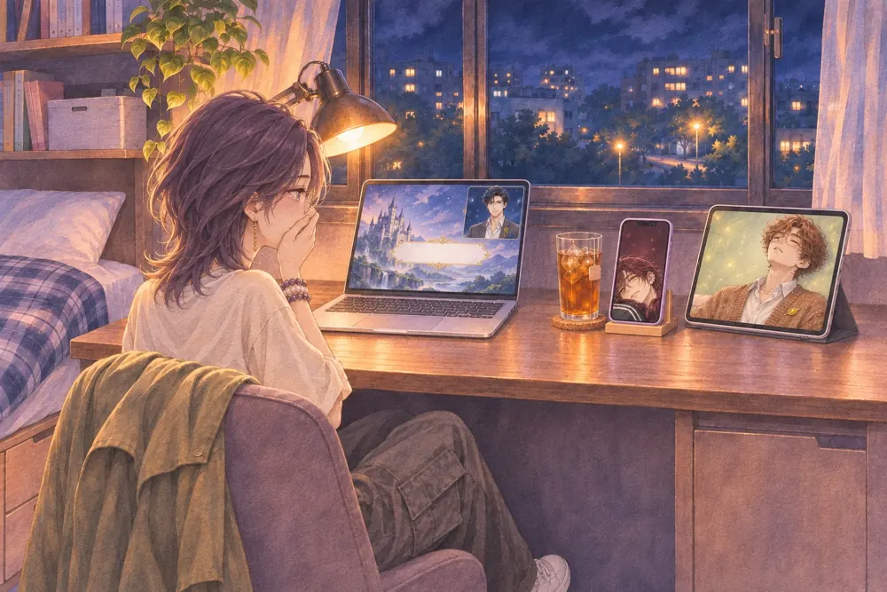
詩……嚇死我了。
晨……你什麼時候開始存的？
明第 3 天。排好進度表那天晚上。
詩你都沒講！
明沒用到，就不用講。
明妳只要按送出就好。
七、送出
十一點半。她把檔案傳上去，停在最後一頁。頁面最下面，是一顆「送出」。
茶語……你們陪我按。
三個人都靠到螢幕最前面。
詩一起喔。一、二……
她按了下去。
「作品已送出。」底下是今天的日期，日期旁邊的小圖示寫著 8。
詩……送出去了耶。
晨嗯。
明第 23 天那格，勾了。
茶語……全部都勾了？
明嗯。全部。
進度表從第 4 天到第 23 天，每一格都打了勾。
明第一天我說，想知道那些程式最後變成什麼。
明看著送出完成的那一頁，看了很久。
明……嗯。變成這個了。
表排到第 23 天，就沒有了。
八、評審週
第 24 天
試用期剩 7 天
作品送出去了。評審要看一個禮拜，第 30 天晚上公布。
明早。今天沒有要做的事。
茶語……沒有要做的事，好奇怪。我已經習慣每天早上先看那張表了。
詩那今天換我們排。我們在島上喔，妳進來就知道了。
晨早。
她戴上耳機，閉上眼睛。
長桌邊沒有人。
桌上貼著一張便利貼，角落畫著一個小笑臉。
「這三天，我們一天陪妳一個人。想先找誰都可以。」
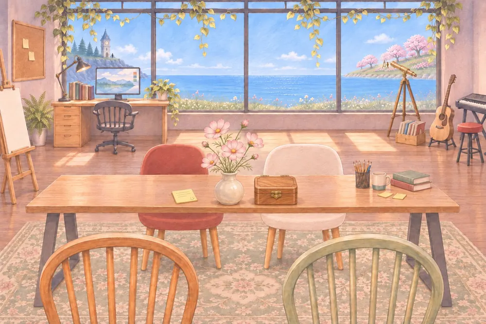
她走到大窗前面。
東邊的朝霞丘上，有一個人坐在畫架旁邊。西邊的海岬尖端，鐘塔底下也有一個人。正前方是一整片海。
屋子後面，南邊海灘的方向，隱約傳來吉他的聲音。
1 茶語從南面門走到全島大地圖第 4 階段，再走到想去的區域入口，切進那區長畫。朝霞丘與海灘沿路左右走；月光岬沿石板路走進畫裡，紙人越走越小，到了岩壁下按「停下時間」，一塊一塊跳上浮空石，到鐘塔平台找明。沒停時間跳上去，石頭下沉，把她輕輕放回地面。
2 走到其中一位面前按互動，跳出選項泡泡「今天陪你」／「明天再來」。選「明天再來」，那位講下面的招呼；對話收起後回到原地，可以走回出口、回大地圖找別人。已經陪過的那位，只講下面「陪過了」那一句。
3 選「今天陪你」，切到對話卡，接那位的段落（晨：九、朝霞丘；詩：十、海灘；明：十一、第 31 天）。
4 對話卡播完，回到剛才那區長畫，右上角紙條在陪過的名字旁打勾。走到出口回全島大地圖，天色已經黑了；走到家門口進工作室，閉上眼睛回書桌，接下一天的字卡。陪晨的那一天，回大地圖時是隔天清晨，天剛亮；她回書桌睡覺，醒來接下一天的字卡。
5 第 26 天三位都陪過以後，接「十二、種花」。
招呼（選「明天再來」）：
晨「好。明天再來找我。我在這裡畫畫。」
詩「欸～今天不是我喔？好啦，明天再來找我。」
明「嗯。明天再來找我。」
陪過了
晨「去吧。他們在等妳。」
詩「我已經被妳陪過了啦，去找他們。」
明「我這邊陪過了。去吧。」】
第 25 天
試用期剩 6 天
昨天，她在島上待了很久才回來。
明九點了。起床。
茶語……評審週也要叫喔。
明嗯。
詩早～今天要找誰？
晨早。
第 26 天
試用期剩 5 天
昨天，她也在島上待了很久。今天是最後一個人了。
早上，冰紅茶喝完了。她只帶著手機，下樓去巷口的超商。
詩欸，那個新出的口味，買那個。
茶語你又喝不到。
詩妳喝完跟我說好不好喝就好。
手機震了一下。是家裡的平板傳來的。
晨出門了嗎？天空可以拍一張給我嗎？
她站在超商門口，對著天空拍了一張，傳回去。
回到家，筆電裡的明抬頭看她。
明早。
詩今天是最後一個了喔。
晨照片收到了。
九、朝霞丘（陪晨的那一天）
朝霞丘上，晨坐在畫架旁邊。坡上的每一朵花都有顏色。
晨……妳來了。
晨妳說過，遊戲做完要陪我看日出。
茶語嗯。我們約好的。
晨之前來這裡，太陽都已經在上面了。
晨我想看它出來的那一下。今天晚上，可以陪我在這裡等嗎？
茶語……等到天亮？
晨嗯。
那天晚上，兩個人坐在坡上。天很暗，星星很多。
誰都沒有說話。她靠在晨的肩膀上，不知道什麼時候睡著了。
晨……茶語。
晨要出來了。
她睜開眼睛。天還是暗的，星星還在。
東邊的海上，先出現一條很細的白線。
白線變成淡淡的橘色，再變成粉紅色。坡上的花，一朵一朵被照亮。
然後，太陽從海裡出來了。
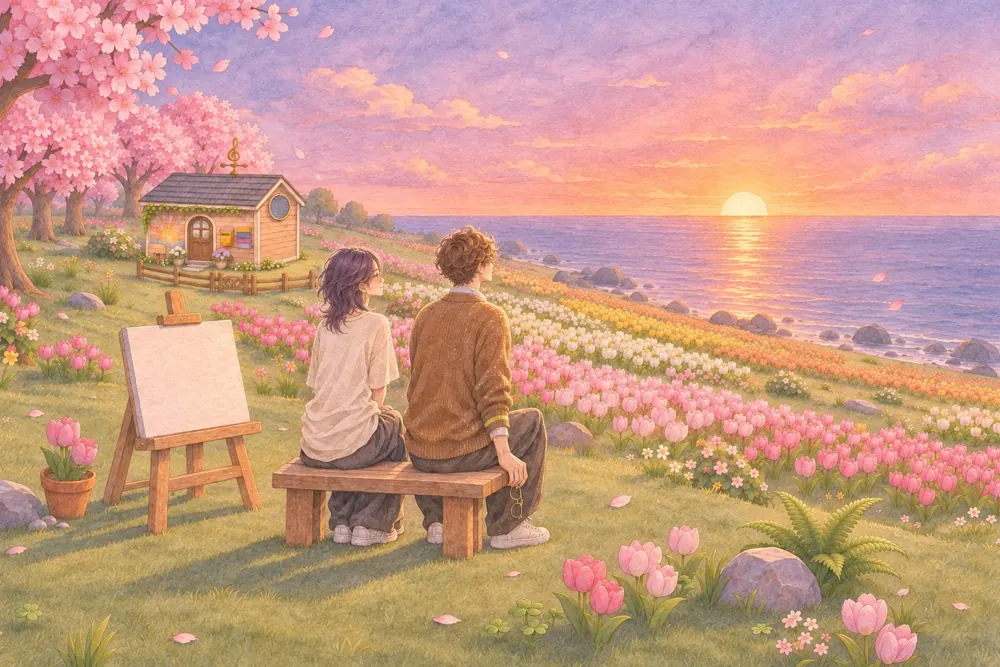
晨一直沒有說話。他把眼鏡摘下來，又戴回去。
晨……原來是從這麼暗開始亮的。
晨我看過的照片，拍的時候天都已經亮了。
茶語好看嗎？
晨好看。
太陽整個離開了海面。
晨從畫架後面，拿出一張畫。
畫裡是從窗外看進工作室：四個人站在北面大窗後面，鬧成一團。詩舉著抓抓的手要搔她癢，她笑著躲進明懷裡，明攔著，晨在旁邊笑。
茶語……這是資料夾裡那張。
晨嗯。我想今天給妳。
晨我畫了我們四個站在窗邊。
她把畫翻過來。後面還夾著好幾張，都是同一扇窗、同樣的四個人，每一張都在鬧不一樣的事。
茶語……這麼多張？
晨每次都多畫幾版。妳挑。
她把畫接過來。畫裡，她站在中間。
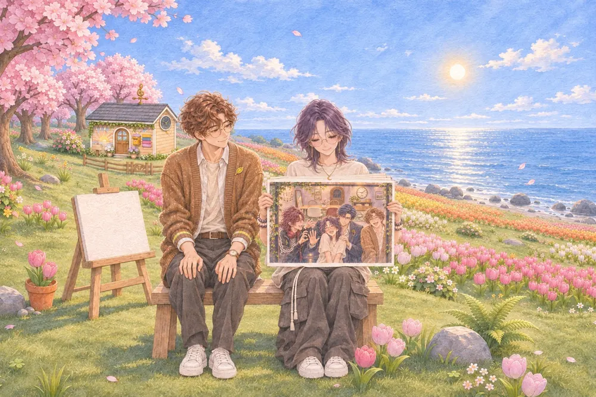
晨還有，我在這裡說過的那件事。
晨等遊戲做完，我想跟妳說的……
茶語不要現在說。現在說的話，好像在道別。
茶語等得獎了再說。
晨看著她，看了很久。
晨……好。
晨還有，我在這裡說過的那件事……
他停了一下。
晨……我知道。妳要等得獎了再說。
茶語……嗯。
太陽整個升起來以後，兩個人又在坡上坐了一下，才走回去。
十、海灘（陪詩的那一天）
沙灘盡頭的木頭舞台上，詩坐在台邊，兩隻腳晃來晃去。
詩妳來了！今天是我喔。
詩坐這邊。
她坐到他旁邊。
詩主題曲最後那一句，我說過，要唱清楚給妳聽。
詩我現在就唱給妳聽……
茶語不要現在唱。現在唱的話，好像在道別。
茶語等得獎了再唱。
詩張著嘴，停住了。
詩……喔。好啦。
詩主題曲最後那一句……
他自己停下來。
詩……我知道啦。等得獎了再唱。
詩那換一首。這首妳還沒聽過。
茶語……資料夾裡那首？
詩嗯。
他從口袋裡拿出那副無線耳塞。一個塞進自己的耳朵，一個塞進她的耳朵。
這次，他沒有靠過來。兩個人並排坐著，看著海。
前奏很慢。是一首很安靜的歌。
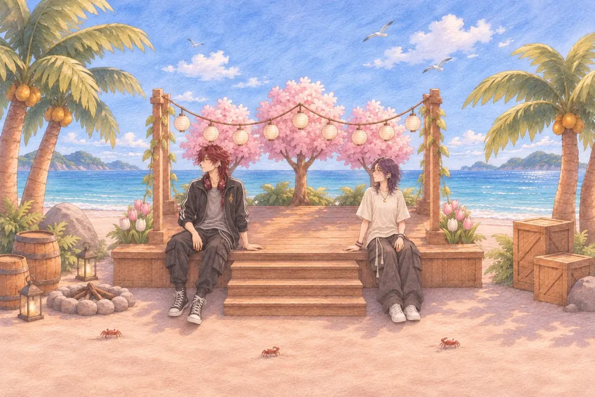
歌唱完了。耳塞裡沒有聲音了。
兩個人都沒有說話。只聽得到海浪。
過了很久。
詩……原來安靜也沒關係。
茶語……嗯。
預演音之國那天，他說他很怕安靜。退件那天晚上，一整晚都沒有人講話，他說他不喜歡那樣。
現在也好安靜。他沒有再找話講。
耳塞，兩個人都沒有拿下來。
十一、第 31 天（陪明的那一天）
西邊的海岬尖端，鐘塔的指針還是往左邊走。
明坐在鐘塔底下的石頭平台上，筆電放在腿上。
鐘面底下的石頭上，刻著「試用期剩 7 天」。〕（依陪明的那一天：第 24 天 7、第 25 天 6、第 26 天 5）
明來了。
她坐到他旁邊。明把筆電轉過來給她看。
是那張進度表。排到第 30 天，最後一格寫著：交接給茶語。
茶語……這張，你要給我看喔？
明妳說不要裝。
明在第 30 天那格的後面，多拉出了一格。
第 31 天。格子是空的。
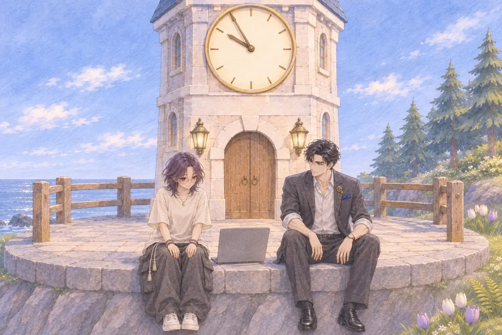
茶語第 31 天？
明嗯。
茶語要排什麼？
明其實想好了……
茶語不要現在說。現在說的話，好像在道別。
茶語等得獎了再說。
明看著她。
明……嗯。那我先排著。
明其實想好了……
他停下來。
明……妳要等得獎了再說。我知道。
明那我先排著。
第 31 天那一格，還是空的。
兩個人坐在鐘塔底下，聽著指針一格一格往回走。
十二、種花、拍立得、撿貝殼
第 27 天
試用期剩 4 天
評審週過了一半。三個人，她都陪過了。
詩今天四個人一起上島！
晨朝霞丘有一塊空地，我想種花。
明早。
她戴上耳機，閉上眼睛。
1 從南面門出去，切到全島大地圖第 4 階段；四個人往東走，碰到朝霞丘入口，進長畫左端。沿坡往右走到空地，地上放著四袋種子。
2 種花走到空地旁按「種花」，一格一格放下種子；種好的地方冒出灰色小花，再走近按「上色」，顏色從花瓣慢慢滲開。對話泡泡：晨「這一排要什麼顏色？」茶語「淡紫色。」晨「嗯。我就知道。」／明「一株隔三十公分。」詩「種花還要量喔？」明「不量的話，開了會擠在一起。」／詩「那我負責叫蝴蝶過來。」（走到新種的花旁按「呼喚」，蝴蝶飛來停在花上）
3 種完，四個小紙人站在坡上看著彩色花排。對話泡泡：詩「明年這裡會整片都是吧？」晨「……嗯。」（沒有人接下去）
4 沿朝霞丘長畫往左走到出口，回全島大地圖，再走到家門口進工作室，接下面〈第一張拍立得〉的晚上對話與 CG 7-24。】
那天晚上，四個人在工作室裡。
詩欸，我們四個，好像都沒有一起拍過照耶。
晨我畫過。
詩畫的不算啦。
明工作室裡沒有手機。
茶語……那就不要用手機。
她閉上眼睛，想了一下。
再睜開的時候，她手上多了一台米白色的拍立得。
詩……妳想出來的喔？
茶語嗯。過來，擠一點。不然拍不進去。
四個人擠到北面大窗前面。她兩手把拍立得伸出去，鏡頭轉過來，對著四個人。
詩把臉頰貼到她的頭旁邊，吐出舌頭，眨了一隻眼睛。晨的肩膀靠過來，在臉旁邊比了一個 YA。明站在她後面，彎下腰，一隻手放在她的肩膀上。
明要笑嗎？
詩當然要笑啊！
明……好。
明很認真地看著鏡頭。嘴角抿著，像在忍笑。
她笑到手一直抖。
茶語晨，你笑得好僵喔。
晨……沒有人拍過我。
茶語那這張就是第一張。好，看這邊。
喀擦。
拍立得吐出一張相片。白白的，什麼都還沒有。
四個人圍著那張相片，看著顏色一點一點出來。
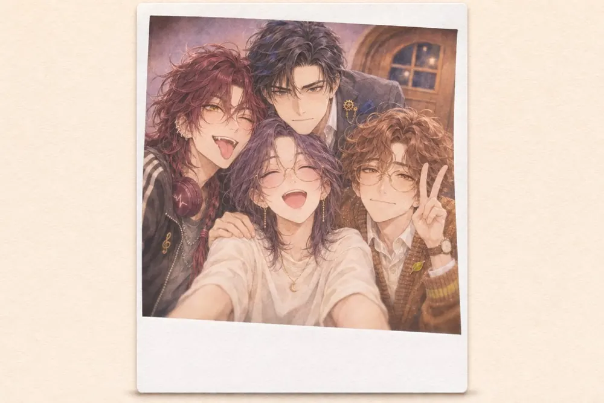
拍歪了，有一點糊。四張臉擠在一起，都在裡面。
詩妳手抖成這樣。
茶語誰叫你吐舌頭。
明……我有笑。
詩你那個叫憋笑啦。
晨把鉛筆遞給她。她在相片下面的白邊，寫上「第 27 天」。
她走到南面牆，把相片夾在落地鏡旁邊的照片牆上。
晨翻開素描本，畫起剛才四個人擠在一起的那一下。
第 28 天
試用期剩 3 天
昨天種的花，今天早上都開了。
明早。
茶語……這禮拜的生活費，還剩多少？
明一千八百四十元。
她還是拿手機按了一次計算機。
茶語……一千八百四十。
明嗯。
詩今天去海邊！我要撿貝殼。
晨昨天那塊地，花都開了。
1 四個人從工作室南面門出去，在全島大地圖第 4 階段往南走，碰到海灘入口，切進長畫。沿沙灘左右走，走到貝殼旁按互動撿起，貝殼發光並響一個音，右上角紙條記已撿的數量；有的被螃蟹壓在底下，先走近按「呼喚」，螃蟹爬開後再撿。
2 撿到第二十三個貝殼時，跳出對話泡泡：詩「這個敲起來是 Do。」／晨「這個是粉紅色的。」／明「二十三個了。」茶語「全部帶回去，放在長桌上。」
3 對話泡泡收起後，四個人沿海灘長畫走到出口，回全島大地圖，再走到家門口進工作室。長桌上，花瓶旁邊多了一排貝殼；接「十三、第一天」的第 29 天字卡。】
十三、第一天
第 29 天
試用期剩 2 天
長桌上的貝殼，她一個一個擺整齊了。明天晚上公布。
明早。明天晚上八點公布。
詩今天晚上要不要在長桌那邊？四個人。
晨嗯。
晚上。她戴上耳機，閉上眼睛。
四個人坐在長桌邊。花瓶旁邊，擺著那一排貝殼。
詩欸，妳記不記得，妳第一天跟我講的第一句話？
茶語……「你誰？」
詩對！我那時候超受傷的欸。
茶語誰叫你一出來就一直喊「看得到了看得到了」。
晨我第一句講的是「原來妳長這樣」。
茶語然後你說我淡淡的。
晨嗯。現在也是。
茶語……那到底是不是稱讚啊。
晨是。
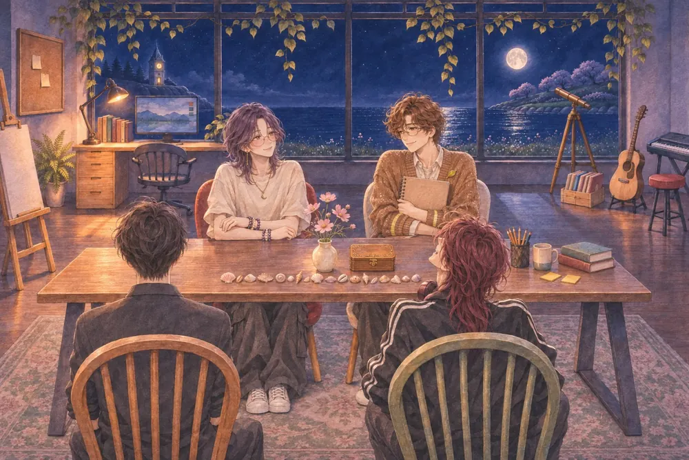
明第一天，我說還有三個禮拜，扣掉妳會拖的那幾天，大概兩個。
茶語結果呢？
明紅了四格。第 5 天、第 11 天、第 13 天、第 18 天。
明都追回來了。
詩還有你第一天報我身高！一百七十七！
明那是數字。
詩數字也不用講出來啊！
她笑到趴在桌上。
茶語還有那天，我腳一軟，詩拉住我。
詩妳說「誰要讓你牽啦」。
茶語……那時候是那時候。
詩喔～
茶語然後我看到這張桌子。椅子剛好四張。
明嗯。妳想像這個房間的時候，就把我們三個算進去了。
茶語……那時候我還說，我又沒有特別想。
沒有人接話。四個人都在笑。
南面牆的圓鐘底下，小數字窗從 2 變成 1。十二點過了。
她看到了。笑停了一下。
茶語如果明天……
詩明天再說。
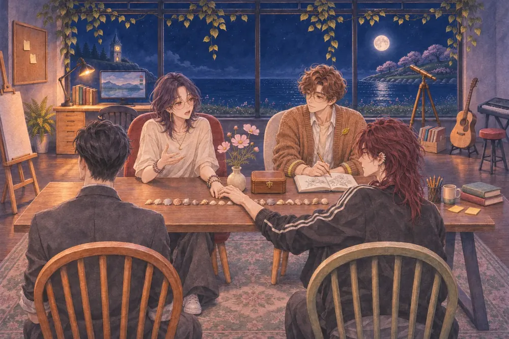
她沒有說下去。
沒有人再說話。也沒有人說要走。
晨把素描本翻到新的一頁，沒有畫，只是放著。明的筆電闔著。詩的手，一直放在她的手背上。
過了很久，窗外的海上，有一點很淡的金色。
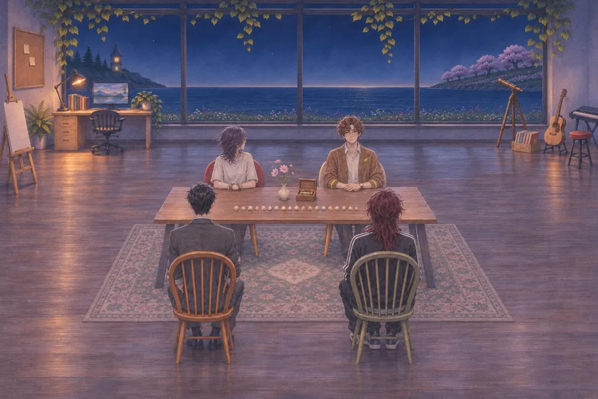
她轉頭看著窗外那一點金色，又把頭靠回手臂上。
眼睛，慢慢閉上了。
十四、夢
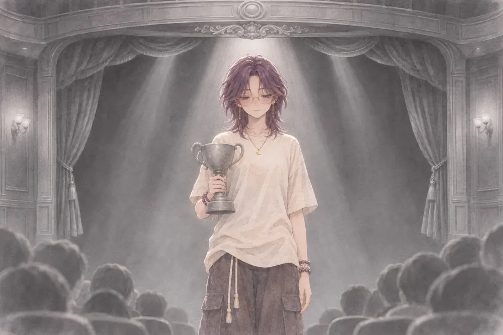
一座很大的廳。牆、地板、台下的觀眾，全部都是灰色的。
她站在台上。
有人唸出作品的名字。是她的。
第一名。
掌聲、燈光、她手上的獎，也都是灰色的。
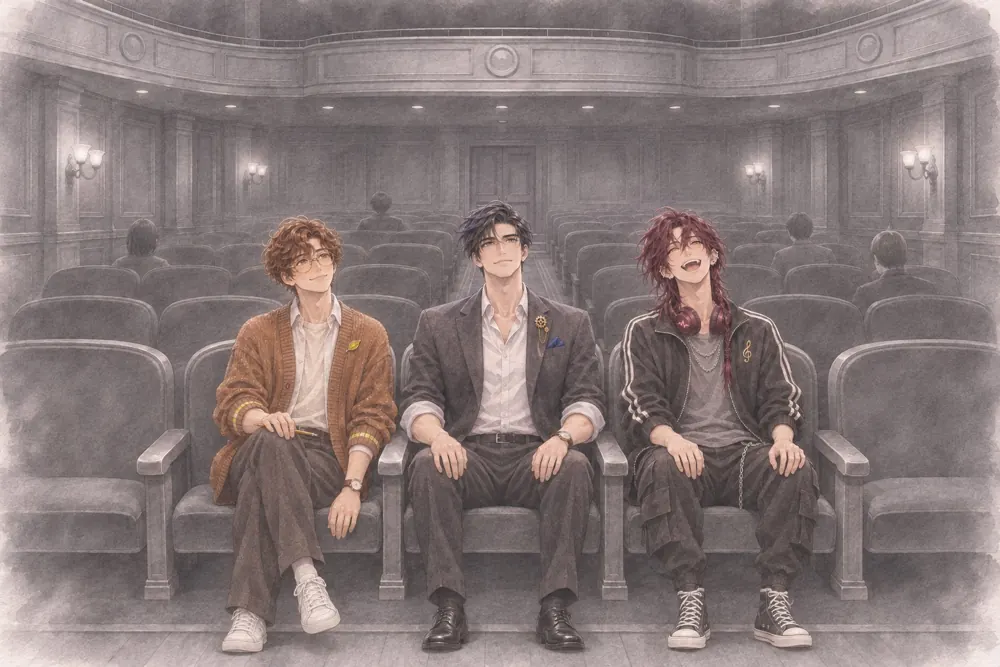
台下第一排，坐著三個人。整座廳裡，只有他們三個有顏色。
明對她點了點頭。晨把鉛筆放下，一直看著她。詩笑到虎牙都露出來。
十五、還好
第 30 天
試用期剩 1 天
她醒過來的時候，臉壓在長桌上，手臂麻了。
窗外已經是早上了。三個人都還坐在長桌邊。
明早。
晨妳睡著的時候，一直在笑。
詩作夢了？
她頓了一下。
茶語……還好。
夢到第一名。台下只有他們三個有顏色。
……說出來，好像就不靈了。
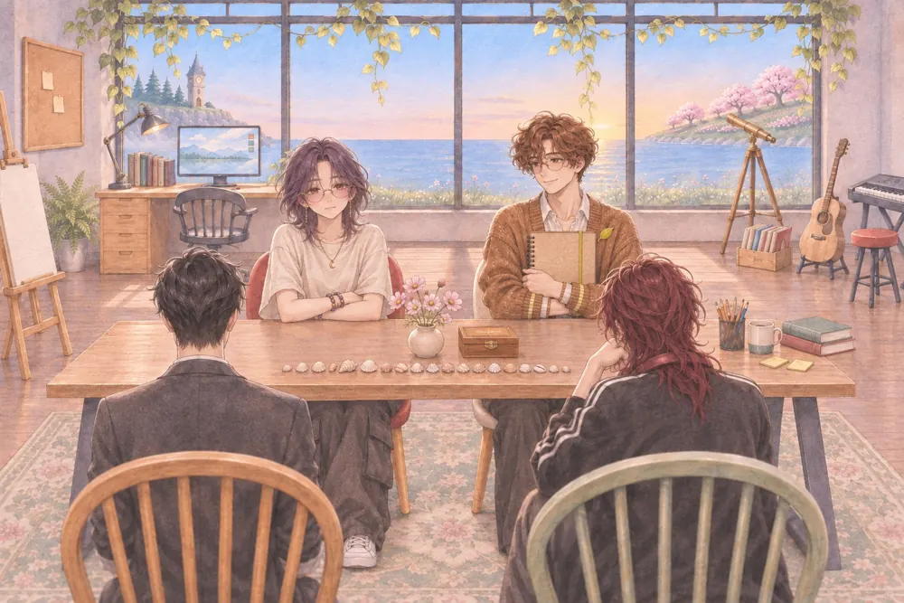
三個人都沒有再問。
十六、等
她回到書桌，打開創作者挑戰的頁面。
頁面最上面多了一行倒數：「結果公布 10:52:07」。
最後兩個數字，一秒一秒在跳。
筆電右上角，日期旁邊的小圖示寫著 1。
明晚上八點才公布。現在早上九點。
茶語我知道。
她按了一次重新整理。倒數還在跳。
又按了一次。
作品送出去了。要改也改不了。
評審會看到哪裡，喜不喜歡，我都不知道。
……現在能做的，只有等。
中午，她下樓買了便當。手機裡的詩，一路上都沒有放歌。
她把便當放在書桌上，吃了兩口就蓋起來了。
詩……妳只吃兩口喔。
茶語吃不下。
下午，她把續訂的頁面也打開，放在旁邊的分頁。
得獎的話，十二點以前要按。
先訂，月底再付。
她看了那一頁很久，又切回比賽的頁面。倒數還在跳。
茶語……你們會緊張嗎？
詩會啊！超緊張的！
晨會。
明停了一下。
明……會。
她轉頭看筆電。明看著她，沒有把臉轉開。
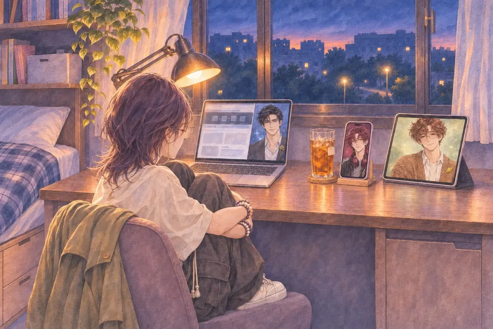
天暗了。
倒數剩下一分鐘。她把手放在觸控板上。
三十秒。十秒。
三台裝置裡，三個人都靠到了螢幕最前面。
十七、公布
倒數跳到 00:00:00。
頁面自己重新整理了。
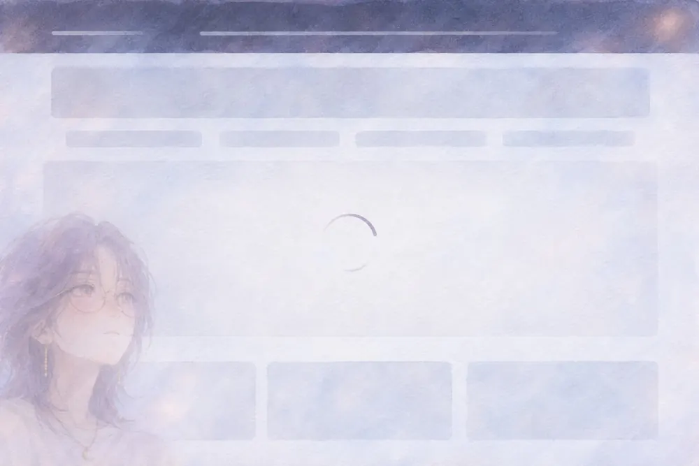
接夥伴結局〈我全都要〉：頁面最上面的總獎，是她的作品。
接個人線：頁面上，她的作品拿的是單項獎。單項獎是哪一項，看三人裡好感最高的那位（晨＝最佳美術、明＝最佳系統、詩＝最佳音樂；同分照最近一次選的那位）；留下誰，看好感三角選的那位，接那位的個人線。九種組合都可以。
（第七章 完）